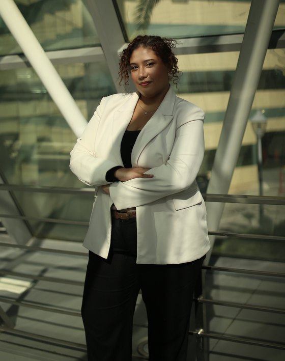

Hi I'm Nada And this quote describes exactly how i feel about being a designer.
My path to design wasn't a straight line, but I wouldn't trade it for anything. After exploring different routes, I finally landed exactly where I belong.
Today, I view designing for a living as a massive privilege, an opportunity to make anything possible, to tell stories and to communicate to humans.
My goal is to always make this belief evident through the quality of my work.
